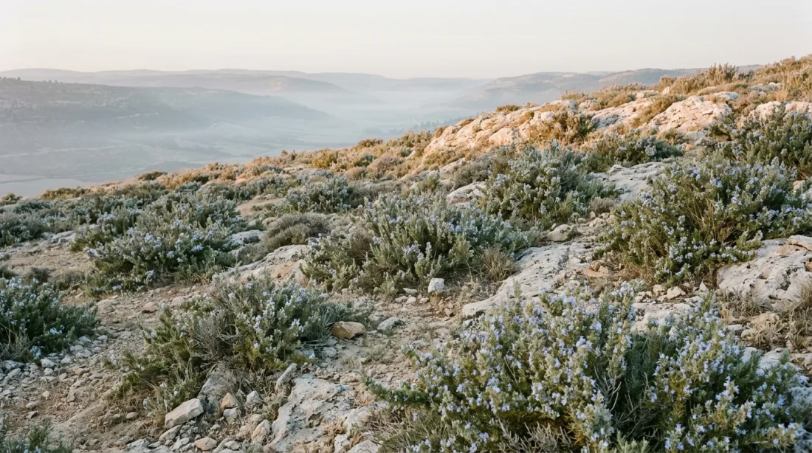
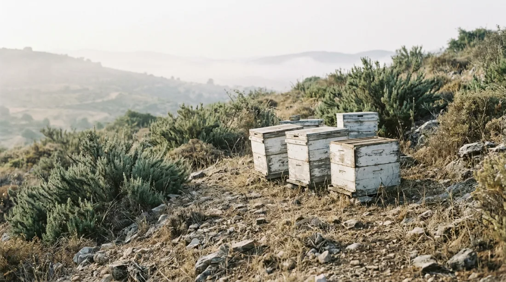
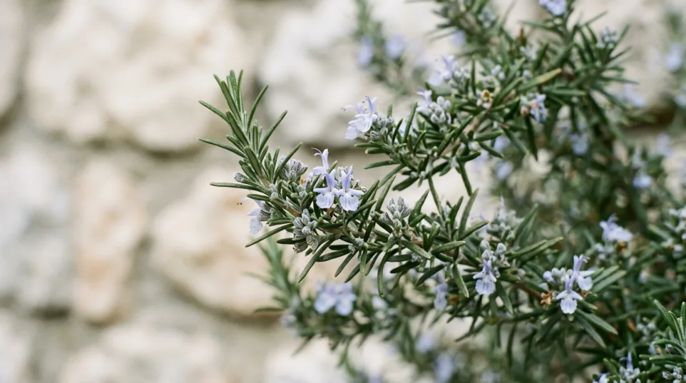
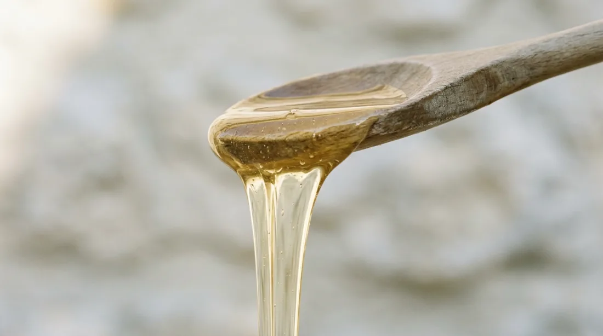
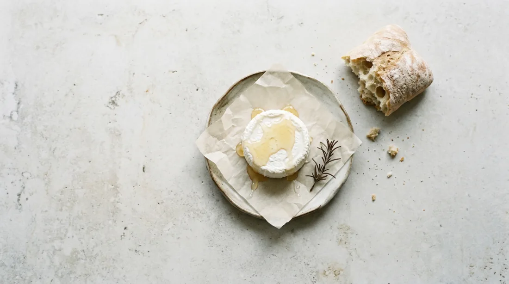
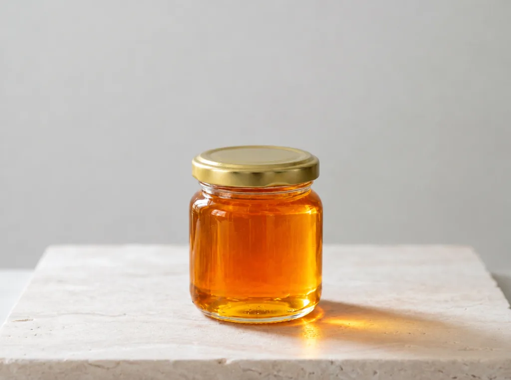
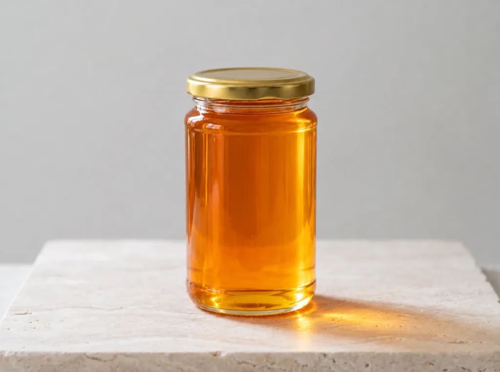

Gooey Sticky Menu

Rosemary flowers at the end of winter, before almost anything else on the dry hills. The bees work it for a few weeks, and the honey they bring back is pale and clear, with a quiet herbal warmth. In the cool of the cellar it slowly turns to a fine white cream.
- Harvest
- March, once a year
- Flowers
- Wild rosemary
- Kept
- Raw, never heated
Origin
The hills above Alva


Taste
Notes from the cellar- Colour
- Pale straw when poured, white once it sets
- Taste
- Gently sweet, resin and a little dry herb at the end
- With
- Fresh cheese, warm bread, a cup of sage tea


Order
Shipped in March and October
€16

€28